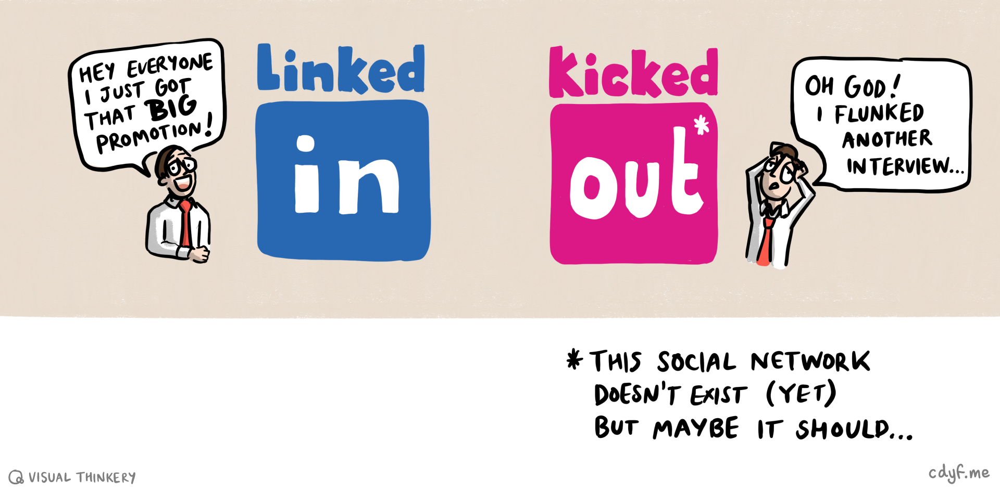
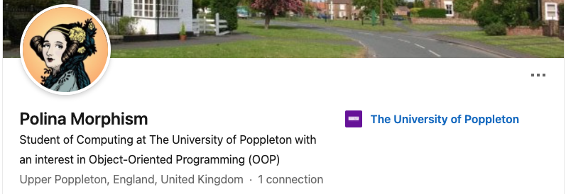

29 Linking Your Future
Linkedin is a large professional network and social media platform. As of 2026, LinkedIn claims to have more than 1.2 billion registered members from over 200 countries. While LinkedIn is a valuable tool, it can be overwhelming, distracting and time-consuming. If you are not mindful about how you (and your peers) use it, you might find it less effective than it can be, see figure 29.1.

Figure 29.1: LinkedIn can be a powerful tool for networking with professionals and exploring career opportunities. Like a lot of social media platforms, there are strong commercial incentives for the owner of the platform to maximise the time you spend on it so that they can make money selling your attention to advertisers. Are you LinkedIn or KickedOut? Sketch by Visual Thinkery is licensed under [CC-BY-ND](https://creativecommons.org/licenses/by-nd/4.0/
29.1 What You Will Learn
This chapter will help you to:
- Decide on the best LinkedIn strategy for you, let’s call them:
- LinkedIn Zero: Thanks but no thanks, you don’t want to be on LinkedIn, described in section 29.2
- Diet LinkedIn: The bare minimum described in section 29.3
- LinkedIn Max: High sugar, maximum caffeine, all of the additives. You’ve signed up for full-on influencer-style personal branding and shameless self-promotion described in section 29.4.
- If you don’t decide on Zero, you’ll learn how to create a basic profile, start looking for jobs and connect with professionals.
29.2 LinkedIn Zero
You might feel pressure to create a LinkedIn profile because “everyone else has one”. Microsoft, who bought LinkedIn in 2016 for $26.2 billion (Nadella 2016) will tell you that:
- Millions of people use LinkedIn, including recruiters and employers
- Thousands of jobs are advertised on Linkedin
- You can connect and network with professionals globally online
- You wouldn’t want to miss out on all the action would you?
Before you get suckered in by the Fear Of Missing Out (FOMO), ask yourself, do you really need a LinkedIn profile? While it definitely has its uses, you might legitimately decide it’s not for you right now because:
- You’re not ready to bare your professional soul to the world just yet, while you figure out what you want to do with your career. It’s way too early to start showcasing your skills and knowledge because you’re right at the begining and you don’t have much to talk about.
- You don’t want to give any more of your data to monopolistic Big Tech because you believe they’ve already hoovered up far too much of our personal information and attention.
- You don’t want any more potentially poisonous social media in your life, thank you very much
- You’re planning to work in cybersecurity, the privacy and security implications of having a LinkedIn profile are not worth the risks.
- You’ve nothing to hide, but just don’t like the idea of anyone anywhere being able find out about you. You don’t have to be on LinkedIn to be successful in your career.
So, there are plenty of legitimate reasons for being a LinkedIn refusenik. You can always join later if you want to. The zero in Linked Zero means zero presence, rather than zero sugar.
29.3 LinkedIn Diet
LinkedIn Diet is the minimum required to use the platform in freemium mode. This uses LinkedIn as little more than a glorified email, allowing employers, recruiters and other professionals to connect with you via the platform. A basic LinkedIn profile need only contain three things:
- Your name e.g.
Polina Morphism - A personalised handle that you can include in the header of your CV as discussed in section 8.7.1 and 8.8.7: e.g.
linkedin.com/in/pollymorphism- it’s worth personalising your LinkedIn public profile URL to replace the randomly generated ID it contains at the end by default. This will look cleaner and more professional on your CV too. When you change it, the old URL redirects to the new one so you don’t need to worry about breaking any links. Instructions on how to do this (it takes a few seconds) can be found at bit.ly/personalli
- it’s worth personalising your LinkedIn public profile URL to replace the randomly generated ID it contains at the end by default. This will look cleaner and more professional on your CV too. When you change it, the old URL redirects to the new one so you don’t need to worry about breaking any links. Instructions on how to do this (it takes a few seconds) can be found at bit.ly/personalli
- A headline that gives some basic information e.g.
Student of Computing at the University of Poppleton with an interest in Object Oriented Programmming (OOP)
A fictional example taken from section 9.3.7 of the chapter on Hacking Your Future is shown in figure 29.2.

Figure 29.2: A pdf of Polina Morphism’s LinkedIn profile can be found at cdyf.me/Polly_Morphism.pdf, the original can be found at linkedin.com/in/pollymorphism (you may be asked to login to see her profile)
This is bare-bones LinkedIn profile, the minimum you need to get you started. Despite what LinkedIn will say, you don’t need to do any more than that to use the basic features. Even a simple profile like this will help you find opportunities and connect with professionals. If you’re anything like me (terrible with names!), you might find LinkedIn useful as a prosthetic memory of people you’ve interacted with.
Having created a bare bones profile, you can now:
- Search and apply for summer internships, year long placements and graduate vacancies advertised on Linkedin see uk.linkedin.com/jobs alongside many others described in chapter 11.
- Connect with professionals who studied at your institution, whatever University you’re attending:
If you’ve not using LinkedIn yet, it might be time to give it a go. You could start by connecting with your peers and alumni, then branch out to connect with professionals you’ve meet at careers fairs and other employer events at your University and beyond.
29.4 LinkedIn Max
If you want to take LinkedIn further than the minimum described in section 29.3, there’s lots more you can do. You can max out your presence by:
- Creating viral content: articles, posts, comments, audio, photos and video
- Getting a professional headshot taken (or generate one with AI) and use it as your profile picture
- Connecting with as many people as possible, including people you don’t know personally
- Doing courses and earn badges with linkedin learning see linkedin.com/learning
- Signing up for a premium account, see premium.linkedin.com/
- Signalling to recruiters that you’re looking for work (Shepero 2016)
- Applying for jobs directly through LinkedIn although making fast applications is not always a good thing (Franklin 2019a)
- Becoming a “thought leader” and “influencer” or what LinkedIn calls a (invite only) Top Voice (Byte 2026)
So that’s LinkedIn Max: “maxiumum taste, no time” (left to do anything else).
Rather than reproduce resources here, here’s some links to places you can get started on maxxing out your presence online with LinkedIn if that’s what choose to do:
- For student oriented resources on LinkedIn see students.linkedin.com
- LinkedIn has tonnes of courses you can do, including how to get started with LinkedIn, see linkedin.com/learning/learning-linkedin-for-students
- The course Learning LinkedIn for Students is available (alongside many others) via a subscription service called LinkedIn Learning. If you’re a student at the University of Manchester, you can access this for free by using your UoM credentials to login with Single Sign On (SSO), see education.library.manchester.ac.uk/digital-skills/digital-skills-support/linkedin-learning.html
29.5 TLDR
Too long, didn’t read (TL;DR)? Here’s a summary:
LinkedIn is a powerful tool that can help you take the first steps in your career. It can also be overwhelming, distracting and harmful to your mental health. If you decide to have a profile, you’ll probably find it useful, but you don’t need to go overboard by:
- Posting and commenting frequently
- Humblebragging about your achievements on a daily basis e.g.
I'm delighted to announce that... - Constantly checking your feed and doomscrolling through the infinite stream of clickbait, self-promotion, questionable careers advice, and AI Slop that is widely available on LinkedIn.
A simple LinkedIn profile with your name, a personalised handle and a headline is enough to get you started. There’s probably some compromise you can strike between Diet LinkedIn and Linkedin Max, possibly Diet LinkedIn Max perhaps?
If you’d like to experiment with LinkedIn, we’ve outlined some of the resources available to help you do so. In the next part, chapter 30 Ruling your Future which outlines Ten Simple Rules for Coding your Future, we’ll recap of some key points we’ve covered so far.